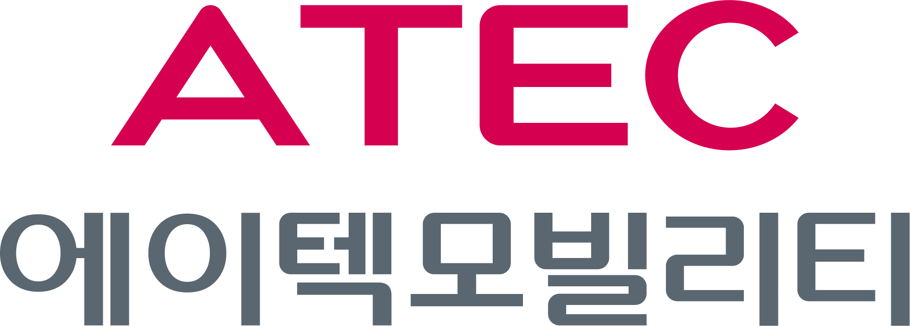

국가철도공단 자료를 불러오는 중
최신 장애 접수와 역·장비 정보를 불러옵니다
로그인 확인 중…
로그인
자료
화면
국가철도공단 키오스크 장애 관리 시스템
불러오는 중…
현황 대시보드
대시보드
장애 입력
입력
장애 목록
목록
메뉴
메뉴
현황 대시보드
조건을 고르면 아래 전체가 함께 바뀝니다.
분석 조건
선택 시 대시보드 전체가 갱신됩니다
전체 초기화
상세 필터 펼치기 ▾
노선
전체
모듈
전체
장애유형
전체
처리유형
전체
처리자
전체
역사 검색
기간
~
확인
이번 달
30일
90일
전체기간
현재 조건 엑셀
모듈별
장애 건수
기준 선택
모듈별
노선별
장애유형별
처리유형별
처리자별
역사별
노선별 비중
월별 장애 추이
접수 건수
모듈별 장애
상위 10
장애유형별
상위 10
처리유형 분포
조치 방법
신규 장애 입력
현장 처리 내역 등록
접수 정보
언제 · 어디서
접수일자
역사 선택
노선
장비번호
선택
장애 내용
무엇이 · 어떻게
모듈명
장애유형
장애내용
처리 내역
조치 · 결과
처리일자
처리유형
교체유무
무
유
처리내역
교체 전 S/N (불량)
교체 후 S/N (정상)
처리결과
완료
처리중
보류
처리자
비고
✏ 수정 모드입니다 — 기존 기록을 고치고 있습니다. 「수정 저장」을 누르면 해당 기록이 갱신됩니다.
수정 취소
저장하기
초기화
기간
~
확인
30일
90일
전체
전체 노선
전체 모듈
엑셀 다운로드
접수일자
노선
역명
장비
모듈
장애유형
장애내용
처리유형
처리내역
교체
결과
처리자
작성완료
메뉴
닫기